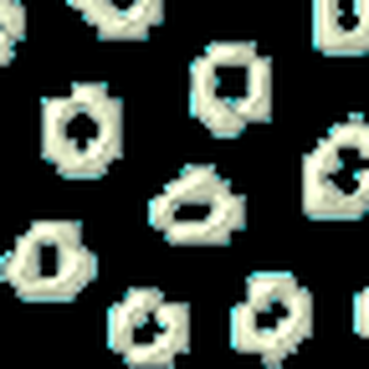
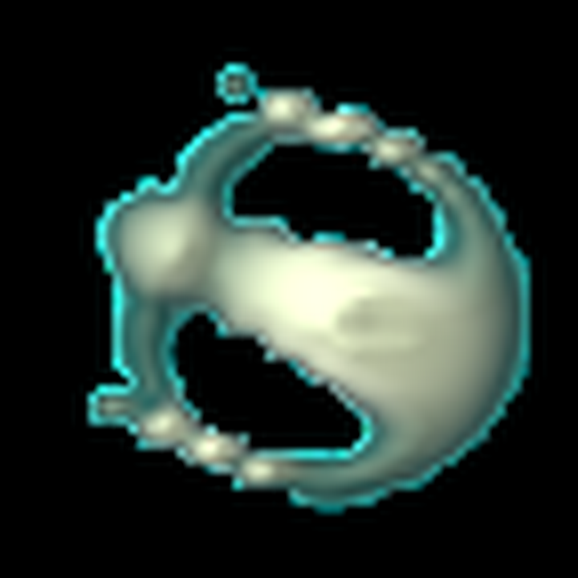
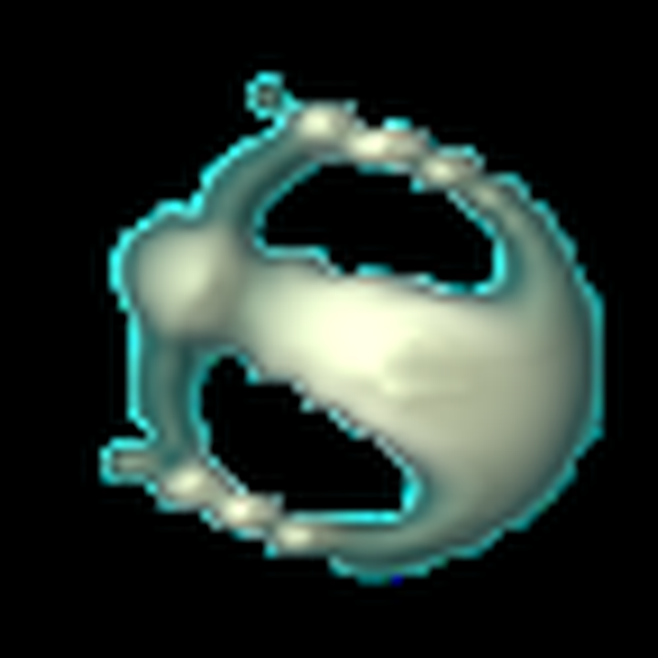
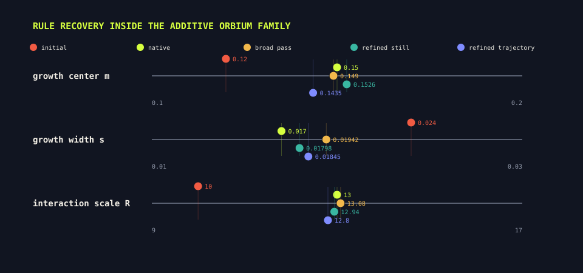
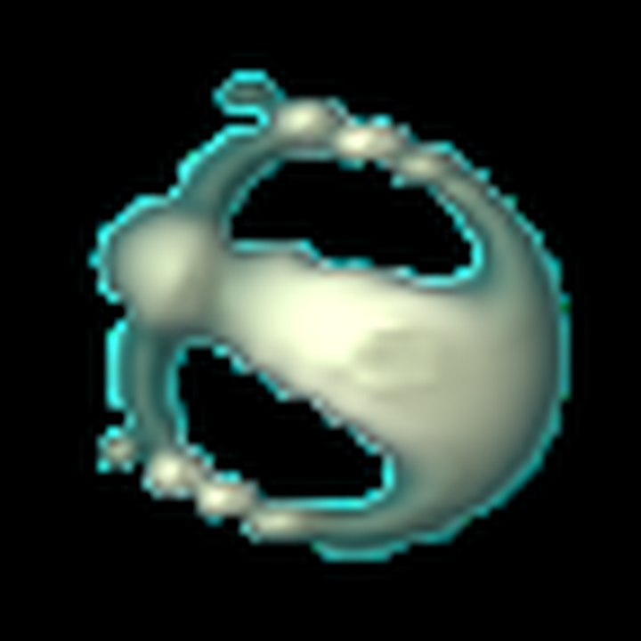
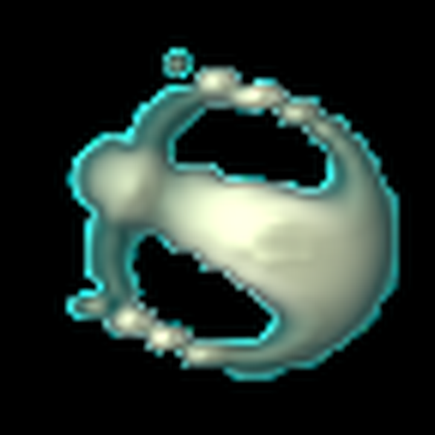
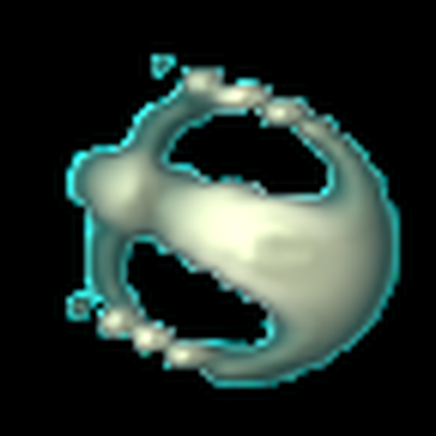
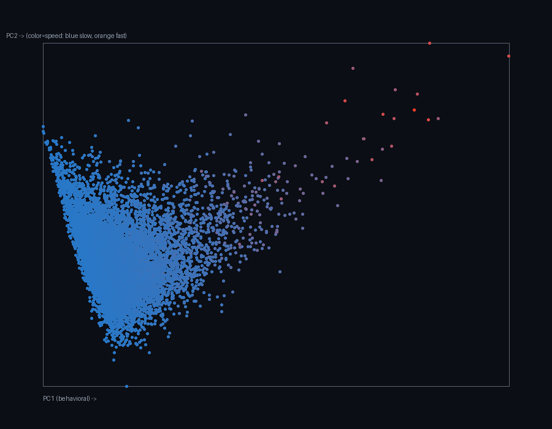
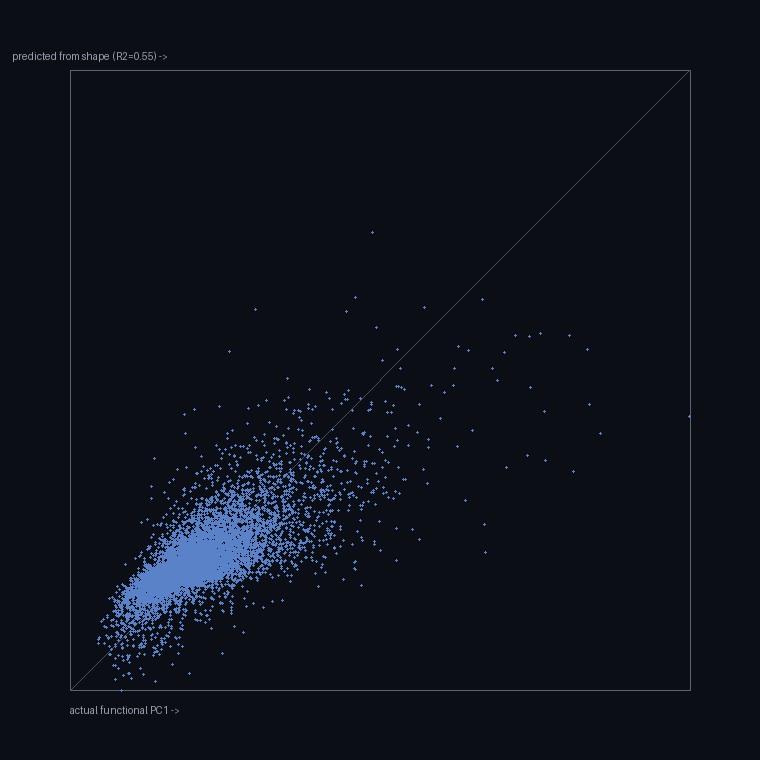
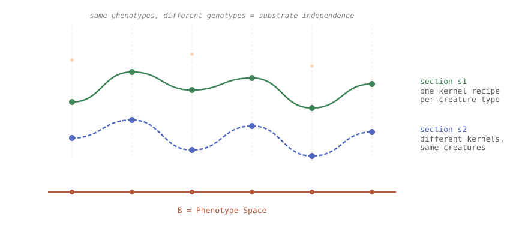

Fix the model
We fixed Orbium’s update rule and one-kernel geometry, then searched for the three parameter values. Other update laws and kernel layouts are outside this comparison.
One mature frame of Orbium was enough for a search to recover its rule parameters close to the native values, once the rule family and the starting cells were known. Without that knowledge the problem is harder, and this report follows what a search needs to be given before it can find a rule that grows and keeps the body we actually want.
 Native rule
Native rule Recovered rule
Recovered ruleThe desired body keeps its form through a continuous process of local change, so recovering it means finding dynamics that sustain the anatomy as well as an image that resembles it. We first fix a known rule family and ask how much of its hidden parameters one observed frame gives back. We then turn to a corpus of Flow Lenia creatures and ask what a body’s shape says about how it moves and whether it recovers from damage, since a compiler that targets a shape inherits whatever comes with it.
This case uses Orbium, an additive Lenia system. It lets us ask how much a mature body reveals when we already know the kind of rule that made it. We supplied its update law, kernel, growth function, and starting cells, then hid three numerical parameters: the interaction radius R, growth center m, and growth width s. Each candidate develops from those same starting cells and is compared with the reference body at step 600.
We fixed Orbium’s update rule and one-kernel geometry, then searched for the three parameter values. Other update laws and kernel layouts are outside this comparison.
The search starts from R=10, m=0.12, and s=0.024. These values disperse the initial cells into a ring and small fragments.
The first stage evaluates 2,688 parameter combinations. Every candidate runs for 600 steps.
28 × 96 rolloutsThe second stage evaluates 1,152 candidates near the broad-search winner. The selected rule is then run to step 1,200.
12 × 96 rollouts


A wrong rule scatters the seed, and the fitted rule grows the same localized body. Each candidate is simulated for 600 steps, then its complete field is compared with the reference field.

The narrow second stage improved the field match from 0.878 to 0.969 and brought all three hidden values close to the native rule.



The fitted parameters also produced a coherent body at the unscored steps. This experiment isolates parameter recovery by supplying the update family, kernel geometry, growth function, starting cells, and elapsed time.
A control search used steps 100, 300, and 600. It returned R=12.80, m=0.1435, and s=0.0185. Its replay also remained coherent through step 1,200.
Both runs used the same broad and refinement budgets. The three-frame run ended farther from the hidden values than the run scored only at step 600. This is one organism, so it does not establish that single-frame targets are generally better.
Even a body that matches the requested shape may move differently, so we measured six behaviors in 8,155 Flow Lenia creatures from one 8,192-seed screen and reduced them to principal axes. Path length, displacement, and center velocity dominate the first axis, which we call locomotion; temporal variance and energy dominate the second, which we call activity. Together these axes account for 90% of the behavioral variation.

Most creatures occupy a dense low-speed region, while fast locomotion forms a sparse tail along the first axis. Any model trained on this distribution will see many more slow examples than fast ones.
8,155 creaturesSize and elongation carried movement. Fitted one behavior at a time, eight shape measurements explained 53% of the variation in speed and in path length, 45% in displacement, and 74% in temporal variance. Across all 112 screens of the same harvest, four rule families with 8,192 seeds each, the medians were 45% for path length, 40% for speed, 36% for displacement, and 73% for variance. Body size and elongation each explained about a third of path length on their own. These are in-sample regressions, not predictions on held-out bodies.

Locomotion predicted from shape follows the diagonal with wide scatter. The fastest creatures are underpredicted.
So a compiler that asks for a body of a given size and elongation is also, to a large degree, asking for how it travels. A target written only as a shape will drag a movement profile along with it, and a target that wants a shape with an unusual gait is asking for something the corpus rarely produces.
A body we can specify also has to survive disturbance. We ran 40 coherent creatures and 120 random rules from the same starting patch, cleared a 40-by-40 square at the center of each at step 400, and measured how far occupancy, spread, and the largest piece’s share of mass ended from an undamaged copy by step 1,000. Complexity is the multiscale structural measure from the same runs.

Across 160 creatures, complexity and form drift after the lesion correlated at r = 0.16.
160 creaturesCoherent creatures were more complex than random rules and drifted further after the lesion, 0.34 against 0.25 on average, and 31 of the 160 fell in the high-complexity, low-drift corner. Complexity alone does not pick out a body that repairs itself, so a target that should survive damage has to say so directly, with the lesion in the objective.
We would like to specify a body whose organization can be reached and then sustained, so a compiler has to find both a route into that organization and dynamics that keep it going. The Orbium reconstruction shows how much a single mature frame constrains when the starting cells and rule family are already known. The corpus adds two facts about any target we write down: a body’s size and elongation carry much of how it moves, and its complexity does not tell us whether it will repair damage.
The next test should require the search to discover a developmental route: start from a compact seed, grow a withheld target body, and maintain its anatomy. Searching for the seed and rule together would make the starting cells part of what is recovered rather than what is given. Changed starting conditions and damage would then test whether the fitted dynamics keep producing and sustaining the requested body beyond the trajectory used to select them.

Each point below represents a set of body measurements. The rules compatible with those measurements form the vertical set above it. The geometry is illustrative rather than measured.
schematic
Because several rules can fit the same target, the system needs a policy for choosing among them. Different policies may select rules with different unmeasured dynamics.
schematic
A smooth change in rule parameters can still pass through a region where no viable body develops. Search therefore has to preserve viability as well as reduce distance to the target.
schematicFigures 05A–05C are conceptual diagrams. They are not generated from measurements.
The ledger records the source for every number, replay, and reused schematic. SHA-256 identifies the exact bytes. The corrected-engine entries record their engine build, code revision, and frozen plan; the September Orbium entries include their exact configs and media.
Methods note. Earlier versions of this page reported results from Flow Lenia simulations whose spatial-derivative step computed the gradient with its sign flipped and its axes swapped, in a Python port of the simulator and in our main engine before it was fixed. Under that step the median creature broke into twelve pieces, which decoupled how bodies traveled from their shape; those results are removed, and the shape and damage measurements here were rerun on the corrected engine. A search on corpus specimen 2876 is also withdrawn, because its batched initializer grew each candidate from a different random field, so the apparent improvement belonged to the starting fields. Orbium uses additive Lenia, which has no derivative step, and its replay on the corrected engine reproduced every recorded frame exactly.
| Kind | Source | Bytes | SHA-256 prefix |
|---|---|---|---|
| 2026-10-18 corrected-engine shape and movement | functional-morphospace-regen-001/plan.json | 5,099 | a8ea746d202cb180… |
| 2026-10-18 corrected-engine shape and movement | functional-morphospace-regen-001/receipt.json | 5,454 | e7b1243ce9c3c7ee… |
| 2026-10-18 corrected-engine shape and movement | functional-morphospace-regen-001/composition.json | 1,242 | fcc9e24304ef9ae8… |
| 2026-10-18 corrected-engine shape and movement | functional-morphospace-regen-001/survey-summary.json | 72,592 | 795347c0e01f1eb5… |
| 2026-10-18 corrected-engine shape and movement | functional-morphospace-regen-001/regenerated/functional_morphospace.json | 1,687 | 94dc1e8324c7272b… |
| 2026-10-18 corrected-engine shape and movement | functional-morphospace-regen-001/regenerated/shape_function_coupling.json | 1,607 | b59963f0f916976a… |
| 2026-10-18 corrected-engine shape and movement | functional-morphospace-regen-001/regenerated/functional_morphospace.png | 50,299 | 26b849d40112e9fb… |
| 2026-10-18 corrected-engine shape and movement | functional-morphospace-regen-001/regenerated/shape_predicts_function.png | 19,216 | dd189a3d249a74df… |
| 2026-10-19 corrected-engine damage assay and Orbium replay | anatomical-compiler-corrected-001/plan.json | 3,015 | 9f0b94e23d353184… |
| 2026-10-19 corrected-engine damage assay and Orbium replay | anatomical-compiler-corrected-001/receipt.json | 2,312 | c950d29a2027a71f… |
| 2026-10-19 corrected-engine damage assay and Orbium replay | anatomical-compiler-corrected-001/complexity-drift/functional_map.json | 16,827 | a1ab9b0811d97bc8… |
| 2026-10-19 corrected-engine damage assay and Orbium replay | anatomical-compiler-corrected-001/complexity-drift/summary.json | 759 | 5a0d7ca9143815b2… |
| 2026-10-19 corrected-engine damage assay and Orbium replay | anatomical-compiler-corrected-001/render_complexity_drift.py | 2,728 | e829be66f9567fa2… |
| 2026-10-19 corrected-engine damage assay and Orbium replay | anatomical-compiler-corrected-001/orbium-replay/comparison.json | 458 | ecfeea600ba8fd2a… |
| reused explanatory schematic | site/assets/blog/lenia-morphospace-report/fig-fiber-bundle.svg | 4,621 | 43000b7e7db2b7c0… |
| reused explanatory schematic | site/assets/blog/lenia-morphospace-report/fig-sections.svg | 4,182 | 569fec81d4c9dd71… |
| reused explanatory schematic | site/assets/blog/lenia-morphospace-report/fig-bridge-genotype-phenotype.svg | 3,035 | 363d5905c657c2e8… |
| 2026-09-02 within-family Orbium inverse | orbium-system-id-v5/experiment.json | 1,284 | e7d17cd2fca63593… |
| 2026-09-02 within-family Orbium inverse | orbium-system-id-v5/still-es.json | 197,817 | c8262451e333bf09… |
| 2026-09-02 within-family Orbium inverse | orbium-system-id-v5/still-run/best.json | 141 | 2e99f52c9591bc8c… |
| 2026-09-02 within-family Orbium inverse | orbium-system-id-v5/still-run/history.jsonl | 12,161 | 540933e403833518… |
| 2026-09-02 within-family Orbium inverse | orbium-system-id-v5/trajectory-es.json | 591,583 | dbb42ebb131bbec6… |
| 2026-09-02 within-family Orbium inverse | orbium-system-id-v5/trajectory-run/best.json | 143 | 97902a5fa38d9c4f… |
| 2026-09-02 within-family Orbium inverse | orbium-system-id-v5/trajectory-run/history.jsonl | 12,205 | b3d53ac97bb5e77a… |
| 2026-09-02 within-family Orbium inverse | orbium-system-id-v5/report-assets/orbium-initial-600.png | 255,120 | 040ffb2271b6a55b… |
| 2026-09-02 within-family Orbium inverse | orbium-system-id-v5/report-assets/orbium-inverse-summary.json | 1,271 | 904916197598ed88… |
| 2026-09-02 within-family Orbium inverse | orbium-system-id-v5/report-assets/orbium-rule-recovery.svg | 6,418 | a0125a9a26e7e89b… |
| 2026-09-02 within-family Orbium inverse | orbium-system-id-v5/report-assets/orbium-still-100.png | 187,493 | 88843f7bf4824041… |
| 2026-09-02 within-family Orbium inverse | orbium-system-id-v5/report-assets/orbium-still-300.png | 186,697 | b7b91bc0d08bd62f… |
| 2026-09-02 within-family Orbium inverse | orbium-system-id-v5/report-assets/orbium-still-600.png | 185,894 | e7eab62cced81915… |
| 2026-09-02 within-family Orbium inverse | orbium-system-id-v5/report-assets/orbium-still-1200.png | 189,664 | 4c4cdf26049b32a0… |
| 2026-09-02 within-family Orbium inverse | orbium-system-id-v5/report-assets/orbium-still-zoom.mp4 | 812,518 | 37933bf5d5c5bb09… |
| 2026-09-02 within-family Orbium inverse | orbium-system-id-v5/report-assets/orbium-target-100.png | 186,009 | 2befab83732f67c4… |
| 2026-09-02 within-family Orbium inverse | orbium-system-id-v5/report-assets/orbium-target-300.png | 187,779 | 2aacf01203662f32… |
| 2026-09-02 within-family Orbium inverse | orbium-system-id-v5/report-assets/orbium-target-600.png | 186,927 | e0ca77a833258f14… |
| 2026-09-02 within-family Orbium inverse | orbium-system-id-v5/report-assets/orbium-target-1200.png | 186,735 | 2d39c4a8ffcb94ed… |
| 2026-09-02 within-family Orbium inverse | orbium-system-id-v5/report-assets/orbium-target-zoom.mp4 | 834,738 | 12c499769fe12ce6… |
| 2026-09-02 narrow Orbium refinement | orbium-system-id-v6-refine/refine-es.json | 197,819 | 7bcda98c84215935… |
| 2026-09-02 narrow Orbium refinement | orbium-system-id-v6-refine/refine-run/best.json | 143 | 43c2f254196e5526… |
| 2026-09-02 narrow Orbium refinement | orbium-system-id-v6-refine/refine-run/history.jsonl | 5,165 | e28679376dddcbf6… |
| 2026-09-02 narrow Orbium refinement | orbium-system-id-v6-refine/trajectory-refine-es.json | 591,585 | 840f48b9aab5b4be… |
| 2026-09-02 narrow Orbium refinement | orbium-system-id-v6-refine/trajectory-refine-run/best.json | 140 | 93cfbf398087a085… |
| 2026-09-02 narrow Orbium refinement | orbium-system-id-v6-refine/trajectory-refine-run/history.jsonl | 5,192 | 7b2bca59b1f57f3b… |
The corrected-engine entries ran on LeniaCLI build 060e90a71ec1, which contains the fixed spatial-derivative stencil. The September within-family Orbium inverse is listed with its exact configs, results, frames, and videos. The complete machine-readable ledger is source-manifest.json.